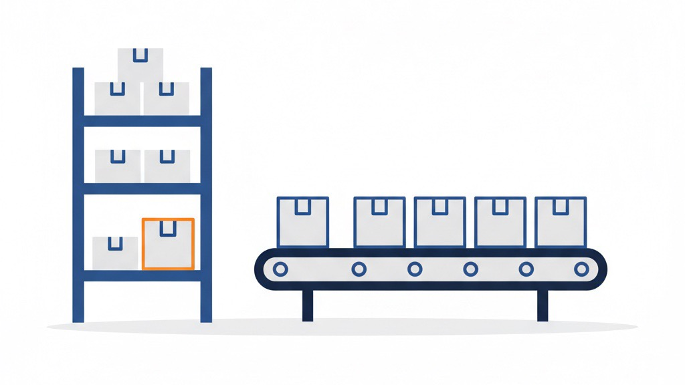

「仕込みの日」をつくる ——SNSコンテンツを在庫として積んで自動消化する
業務改善コラム ／ 仕組み化・自動化 ／ 読了目安：約8分
毎朝「今日、何を投稿しようか」と考え始めると、それだけで午前中が終わることがあります。SNS運用の消耗の多くは、コンテンツの「生産」と「配信」を同じ日に同時にやろうとすることから来ています。商品を仕入れてその日のうちに売りきろうとする小売業者がいないように、コンテンツにも在庫という考え方を持ち込むと、運用の負荷は大きく変わります。
毎日投稿が消耗する本当の理由
SNS運用を「毎日続けなければ」と感じている方ほど、続かないパターンに入りがちです。理由は単純で、「何を投稿するか考える」「素材を作る」「投稿する」という3つの作業を、毎日まとめてこなそうとしているからです。
これは、飲食店がランチタイム直前に仕込みを始めるようなものです。毎日それをやると、余裕がなくなった瞬間に投稿が止まります。「更新が途切れた」という状態は、サボっているのではなく、構造上そうなっています。
問題は意志の強さではなく、設計にあります。
コンテンツを「在庫」としてみる
商品在庫と同じように、コンテンツも「先に積んで、後で消化する」という考え方ができます。投稿予定の画像・文章を事前に作り終えて、配信を待つ「順番待ちの列」に入れておけば、配信日に何もしなくてよくなります。
この発想の転換はシンプルですが、実際にやっている人は少ないです。なぜかというと、「SNS投稿＝今日の出来事をリアルタイムで発信するもの」というイメージが根強いからです。しかし実際には、読者はその投稿がいつ作られたかを知らないし、気にもしていません。
- 商品紹介・使い方の説明（季節性が低いもの）
- 知識やコツを紹介する投稿（情報の鮮度が数週間以上保つもの）
- ブランドの世界観を伝える投稿
- よくある質問への回答
逆に、速報性が必要なニュース系やセール告知は在庫化に向きません。自分のアカウントで何が多くを占めるかを確認してみてください。多くの場合、在庫化できるものが8割以上あります。

「仕込みの日」の過ごし方
在庫を積むには、「仕込みの日」を意図的にカレンダーに入れる必要があります。毎日少しずつ作るより、週に1〜2回まとめて作るほうが効率的です。理由は、素材を作る「モード」に入るまでに時間がかかるからです。集中して複数本まとめて作れば、1本あたりの時間は確実に短くなります。
実際に私が運用しているInstagramアカウントでは、1回の仕込み作業で複数テーマの画像を6〜7枚ずつ生成して、git（作ったファイルの変更履歴を残しておく管理の道具）で管理しています。テーマごとにまとめて記録しておくと、「どこまで仕込み済みか」が一覧で把握できます。
- テーマを3〜5本分先に決めてからデスクに座る（当日に考えない）
- 1本完成したら次のテーマに移る。その日の仕上がりを評価しない
- 作ったものはすぐ順番待ちの列に入れる（「後で確認してから」は積み残しの原因）
- 作業を終えたら、列に残っている数（何日分あるか）を確認する
大切なのは、仕込みの日に「今日投稿するもの」を作ろうとしないことです。あくまで未来の自分のための在庫を積む時間と割り切ります。
順番待ちの列に積んで、あとは自動で消化する
仕込んだ投稿を順番待ちの列に入れたら、あとは自動配信の仕組みが時刻通りに投稿します。BufferやHootsuite、あるいは自前で組んだ小さなプログラムなど、道具は何でも構いません。重要なのは「人間が投稿ボタンを押さなくてもよい状態」を作ることです。
私の仕組みでは、順番待ち用のフォルダに投稿文と画像を入れておくと、決まった時刻に動き出す小さなプログラムが順番に処理して配信します。Instagramは夕方、Threadsは朝と昼と夜の3枠、という形で時間帯も事前に設定してあります。
自動化に費用をかけたくない場合は、Googleカレンダーに「投稿予約済み」の予定を入れておくだけでも、残りが目で見えるようになります。道具より先に、在庫という考え方を持つことが先決です。
「試行3」という命名が教えてくれること
仕込みを続けていると、最初のうちは「この投稿、本当に出していいかな」という気持ちが出てきます。完成度が気になって、順番待ちの列に入れずに寝かせていると、在庫は積み上がりません。
私がコンテンツファイルにつける名前のひとつに「試行3」という表記があります。1回目、2回目と試して、3回目のバージョンをそのまま入稿しているという意味です。完璧なものを1本作ろうとするより、7割の完成度のものを繰り返すほうが、結果として質が上がります。
読者が1本の投稿を覚えている確率はそれほど高くありません。それより、継続して顔を見せ続けることのほうが、ブランドとしての存在感につながります。「試行3」という名前は、完璧主義を手放すための合図として機能しています。
仕込みながら別の仕事ができる日
在庫が積み上がり、自動配信が回り始めると、配信日に何もしなくてよくなります。実際にそういう日が来ると、「自動公開が走っているのを横目に、別のことに集中できている」という感覚があります。仕組みが静かに脇役として機能している状態です。
これは単なる時短ではなく、自分の注意をどこに向けるかの問題です。SNSの投稿日を気にせずに済む分だけ、商品開発や顧客対応など、自動化できない仕事に集中できます。
SNS運用に追われている感覚がある方は、まず自分のコンテンツの何割が在庫化できるかを確認してみてください。次に、今週の仕込み作業を1枠カレンダーに入れてみる。それだけで、運用の構造は少しずつ変わっていきます。
SNS運用の「仕込み」、一緒に設計しませんか
「どこまで自動化できるか」「うちの規模でも使える仕組みか」など、LINEでメッセージをいただければ状況に合わせてお答えします。予約や電話は不要です。気軽にLINEでご連絡ください。
LINEで相談する